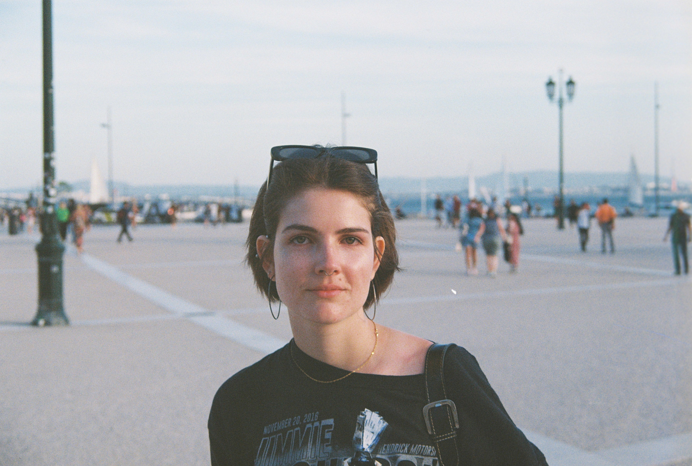
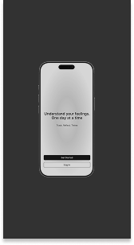
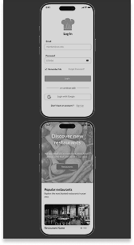
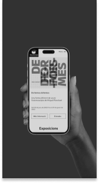

Moddy
Scalable UI system built using Atomic Design principles. Focused on reusable components and visual consistency.
View Figma File →UX/UI Designer with front-end foundations
My name is Meritxell and I'm a UX/UI Designer with 2.5+ years of experience designing and implementing scalable web applications. Specialized in design systems, component-based architecture (Atomic Design), and front-end collaboration to ensure consistent and efficient product development.
With hands-on experience in HTML and CSS/SCSS, I bridge the gap between design and development, creating solutions that are not only aesthetically strong but also technically feasible and implementation-ready.
My background in Translation and Interpreting gives me a global and cross-cultural perspective, allowing me to design digital experiences that communicate clearly and resonate with diverse audiences.
I believe that strong design systems, clear communication, and collaborative workflows are key to building reliable, user-focused products. I thrive in environments that value ownership, continuous learning, and cross-functional teamwork.
Check my CV
My full case studies are on Behance



Scalable UI system built using Atomic Design principles. Focused on reusable components and visual consistency.
View Figma File →
In the last 10 years smartphones have changed the way the live and interact with our surroundings. A study conducted in 2023 found that only 27.5% of Spanish restaurants manage their internal operations with an integrated application. According to a report carried out in 2022 by the Bank of Spain, 32% of Spaniards pay by card on a daily basis. This was my final degree project and app that encapsules booking, order and paying in a restaurant.
View Project →
The museum of cinema located in Girona opened in 1998 the first of its kind in Spain. Its aim is to become a centre of dynamism in the world of cinema and visual arts. This was a semester-long project in my Interface Design course. The assignment was to give a fresh design to the former web.
View Case Study → View Figma File →